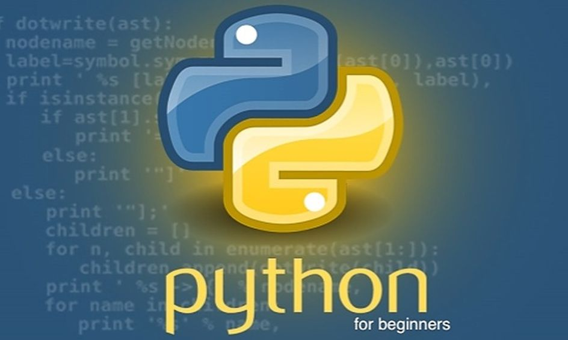

III.My skill
Giao Tiếp.
- Có được kỹ năng giao tiếp là một trong những phần quan trọng nhất trong cuộc sống và công việc. Đối với tôi, việc phát triển kỹ năng giao tiếp đã thực sự thay đổi cách tôi tương tác và làm việc với mọi người.
Tôi cảm thấy tự tin hơn khi nói chuyện, trình bày ý kiến và thuyết phục người khác. Kỹ năng này không chỉ giúp tôi diễn đạt ý tưởng một cách rõ ràng mà còn giúp tôi lắng nghe và hiểu rõ quan điểm của người khác.
Quan trọng hơn, kỹ năng giao tiếp đã giúp tôi xây dựng mối quan hệ tốt hơn với người khác. Tôi có thể hiểu được những góc nhìn khác nhau, tôn trọng ý kiến và làm việc hiệu quả trong nhóm.
Tôi cảm thấy rất biết ơn vì có kỹ năng giao tiếp này vì nó không chỉ làm tăng khả năng thành công trong công việc mà còn giúp tôi xây dựng một môi trường làm việc tích cực và hòa đồng. Điều này cũng mở ra cơ hội mới, từ việc tạo ra mối quan hệ cá nhân đến việc thực hiện các dự án chung trong công việc.
Tự Học.
- Tự Học.
- Tham Khảo.
- Tìm Tòi.
Lập Trình.
- Python.
- Python không chỉ giúp tôi viết code một cách hiệu quả mà còn dạy tôi cách tư duy và giải quyết vấn đề một cách sáng tạo. Việc làm việc với các thư viện và công cụ trong Python cũng mở ra một thế giới rộng lớn của khả năng và tiềm năng.
Quan trọng hơn, việc thuần thục Python đã giúp tôi trở thành một lập trình viên linh hoạt hơn, có khả năng áp dụng kiến thức này vào nhiều lĩnh vực khác nhau như phân tích dữ liệu, machine learning, web development và nhiều ứng dụng thú vị khác.
Tôi cảm thấy hạnh phúc vì có thể sử dụng Python để biến những ý tưởng trừu tượng thành hiện thực và thấy rằng kiến thức này có sức mạnh thực sự trong việc giải quyết các thách thức và tạo ra những điều mới mẻ, đột phá.

- SQL.
- SQL Server cung cấp cho tôi một nền tảng mạnh mẽ để lưu trữ dữ liệu một cách có tổ chức và hiệu quả. Khả năng tối ưu hóa truy vấn và xử lý dữ liệu lớn giúp tôi thấy rằng tôi có thể làm việc với dữ liệu phức tạp mà vẫn duy trì hiệu suất cao.
Tôi cảm thấy hứng thú với khả năng linh hoạt của SQL Server trong việc tích hợp với nhiều ngôn ngữ lập trình và nền tảng khác nhau. Việc này mở ra cánh cửa cho việc xây dựng các ứng dụng phức tạp và tích hợp vào hệ thống tổng thể một cách dễ dàng.
Đặc biệt, việc thuần thục SQL Server đã giúp tôi hiểu rõ hơn về cách quản lý dữ liệu, áp dụng các chiến lược bảo mật và thực hiện các tác vụ quản trị cơ sở dữ liệu một cách hiệu quả.
Tôi thấy mình có thêm năng lực và kiến thức để xây dựng và duy trì các hệ thống cơ sở dữ liệu phức tạp, và điều này mang lại sự tự tin và niềm vui khi làm việc trong lĩnh vực này.

- Html.
- Việc thuần thục HTML đã giúp tôi hiểu rõ cấu trúc của trang web, từ việc xác định tiêu đề, đoạn văn bản, hình ảnh, đường liên kết đến các phần tử khác như bảng, form, hay multimedia. Tôi cảm thấy tự tin hơn khi có khả năng tạo ra giao diện người dùng trực quan và chất lượng cao.
Có kiến thức sâu về HTML cũng giúp tôi hiểu rõ hơn về cách tối ưu hóa trang web để nó có thể được hiển thị một cách đồng nhất và linh hoạt trên các thiết bị khác nhau, từ máy tính đến điện thoại di động.
Khả năng kết hợp HTML với CSS và JavaScript mở ra một thế giới mới, cho phép tạo ra những trải nghiệm web động và tương tác. Điều này thú vị và đầy cơ hội để thể hiện sự sáng tạo và phát triển những ứng dụng web phức tạp.
Tôi cảm thấy mình có công cụ cơ bản nhưng mạnh mẽ để biến những ý tưởng thành hiện thực trên nền tảng web, và điều này mang lại sự hứng thú và niềm đam mê trong việc xây dựng các trang web và ứng dụng trực tuyến.

Quai lại đầu trang.